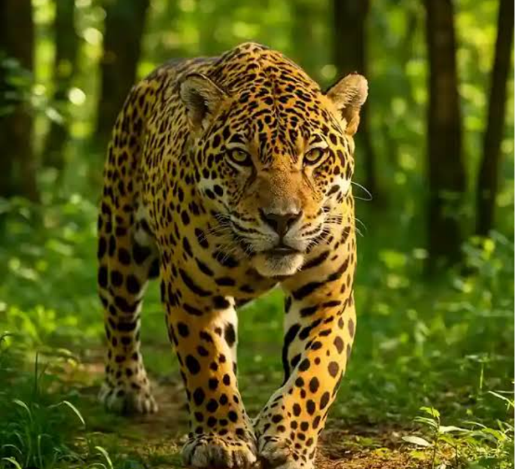
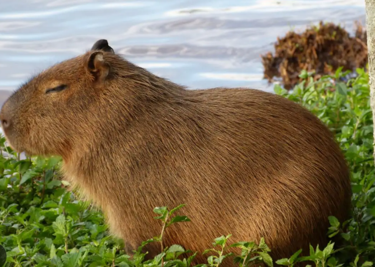

Onça-pintada
A onça-pintada é o maior felino das Américas e vive na Amazônia e no Pantanal.onça-pintada é o maior felino das Américas e vive na Amazônia e no Pantanal.A onça-pintada é o maior felino das Américas e vive na Amazônia e no Pantanal.onça-pintada é o maior felino das Américas e vive na Amazônia e no Pantanal.

Capivara
A capivara é o maior roedor do mundo e vive próxima de rios e lagos.A capivara é o maior roedor do mundo e vive próxima de rios e lagos.A capivara é o maior roedor do mundo e vive próxima de rios e lagos.A capivara é o maior roedor do mundo e vive próxima de rios e lagos.

Tucano
O tucano é uma ave brasileira conhecida pelo seu grande bico colorido.O tucano é uma ave brasileira conhecida pelo seu grande bico colorido.O tucano é uma ave brasileira conhecida pelo seu grande bico colorido.O tucano é uma ave brasileira conhecida pelo seu grande bico colorido.